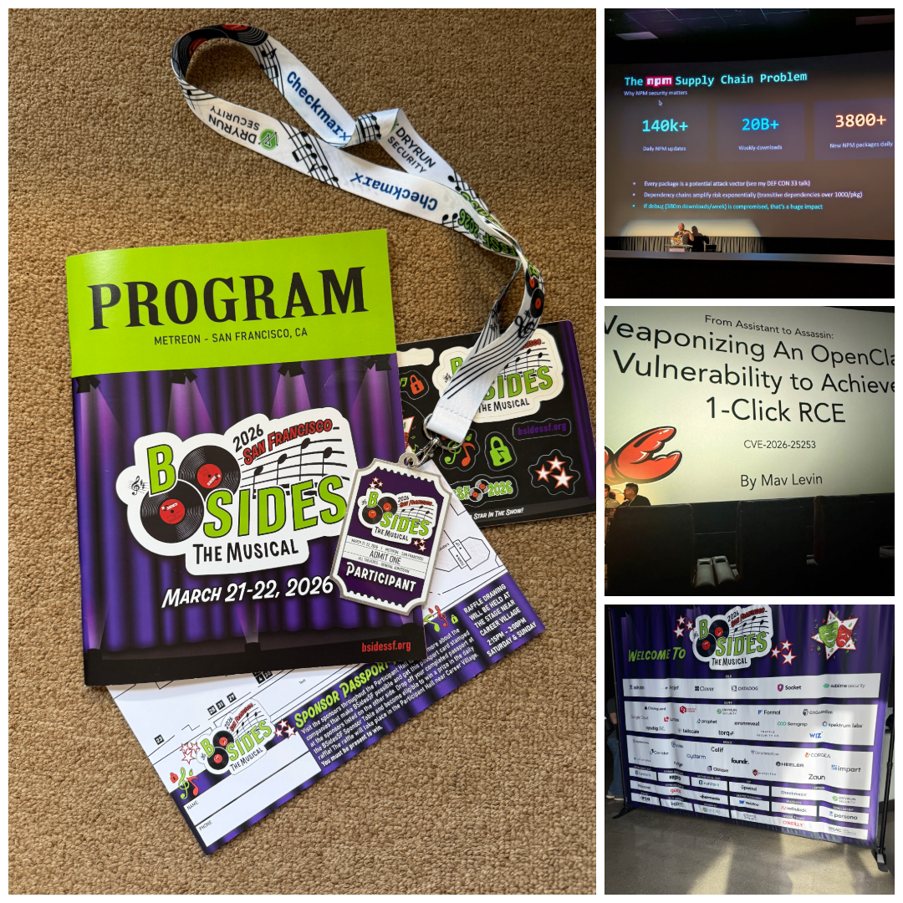

BSides San Francisco: Infosec Conference 2026
BSidesSF 2026 marked my fourth time attending the conference, and it was a fascinating evolution from the AI-centric discussions of 2025. Building off last year's trends, the conversation has matured from general AI awareness into a palpable focus on the security of autonomous agents.
Throughout the sessions, there was a clear shift toward practical defense in an increasingly automated world. Talks like "Not My Vibe: When AI Coding Agents Go Off the Rails" highlighted the real-world risks of moving from AI assistants to autonomous "assassins," exemplified by deep dives into vulnerabilities like CVE-2026-25253 that can achieve 1-click RCE. The "musical" theme of the event underscored this need for orchestration, especially when tackling the staggering scale of the npm supply chain, where over 140,000 daily updates demand a level of "watching the watchmen" that we are still struggling to perfect.
The human element remained a cornerstone of the event, framed this year through the lens of history and adaptation. Sessions such as "Let's Do the Timewarp Again!" reminded us that while our tools change -moving from old patterns to paved paths -the need for empathy, collaboration, and a "look back to move forward" remains constant. It’s the collective intelligence of the community, rather than just technical prowess, that ultimately secures the encore.
Attending these presentations was both a privilege and an enlightening experience. The insights shared were not only informative but also inspiring, reinforcing the importance of continuous learning in this field. A heartfelt thank you to the BSidesSF staff, volunteers, presenters, and everyone involved in orchestrating such a remarkable event.
Overall, BSidesSF 2026 served as a compelling reminder that as our systems become more autonomous, our community must become more synchronized. Thank you, BSidesSF, for another outstanding conference. I'm already looking forward to Year 5!
